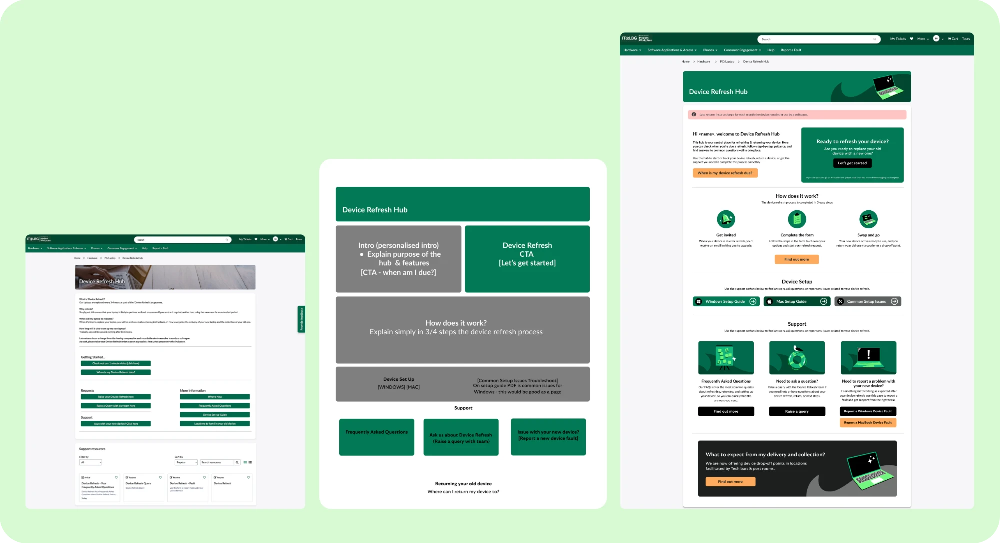
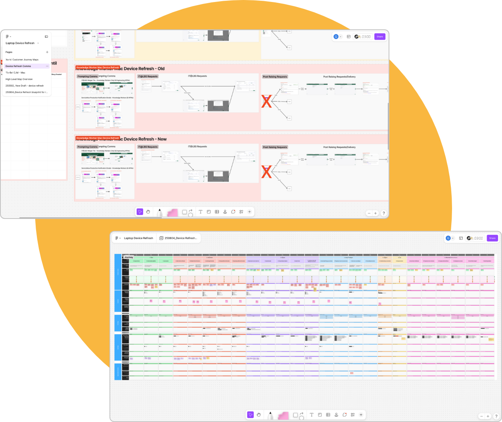
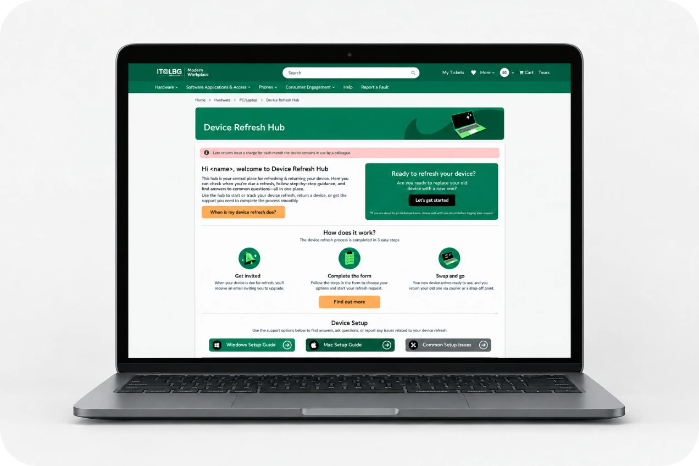

Device Refresh Hub
Heuristic Evaluation, Research, UX Design, UI Design, Wireframes, Prototyping, Email Comms
The existing Device Refresh Hub lacked context, clear navigation and expectation-setting. It was text-heavy and did not adequately reflect where colleagues were within their individual device refresh journey.
The Plan
Redesign the Device Refresh Hub and supporting journey to create a simpler experience that helped colleagues understand their refresh status, find relevant information and know what to do next.

The Process
Working closely in collaboration with the relevant Customer Journey Manager, we researched into all of the relevant touch points in the Customer Journey Map looking at pain points with a view to the Device Refresh Hub becoming the one source of truth and go to at all points in the journey.
In addition, I conducted a heuristic review with the responsible team, redesigned the information hierarchy, created wireframes and a Figma prototype, and built the new experience with the PM.
Later in development, I introduced dynamic states that would display varying information to the user depending on what stage of the journey they were at. I also extended the redesign into supporting forms, query journeys and communications.

Result
The project delivered a redesigned Device Refresh Hub with clearer hierarchy and journey-specific states, alongside improvements to its connected pages, forms and communications, creating a more consistent end-to-end Device Refresh experience.